Module 05: Matrices in R
--February 14th, 2021--
This assignment focused on learning about using matrices in R programming. The initial task was to
find the inverse and determinant of two matrices named A and B. A was a 10 column, 10 row matrix with values from
1 to 100. B was a 10 row, 100 column matrix with values from 1 to 1000.
I generated the two matrices using the matrix() function in R, assigning them to variables A and B.
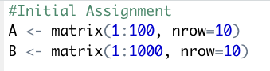
I then found the determinants for both matrices using the det() function in R. The determinant of A was
0, and the determinant of B couldn't be found because it was a non-square matrix.
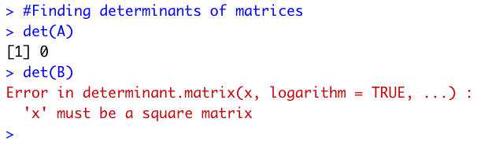
I then used the solve() function in R to find the inverse values of the two matrices. Matrix A did not have an inverse
because it was "exactly singular", and matrix B did not have a clear inverse once again because it was non-square.
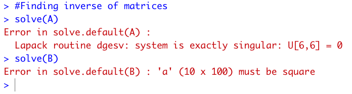
In the second portion of the assignment outlined in the Announcement on Canvas, several matrix calculations were required.
Using the same matrices, A and B, the first step was transposing them using the t() function in R.
 The next step was to create two vectors. I purposefully made sure that each vector, a and b, had either 10 or 100 values
so that they would better align with matrices A and B for multiplication using the %*% argument.
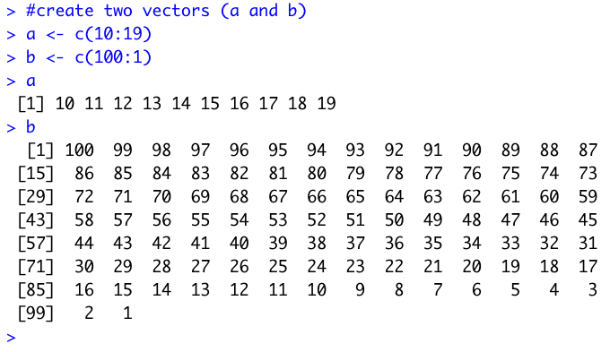
Next we had to test matrix multiplication using the %*% argument with matrices A and B, and vectors a and b.
Matrix A and vector a were able to be multiplied in any order, since the length of vector a is 10 and matrix A has both 10
columns and 10 rows.
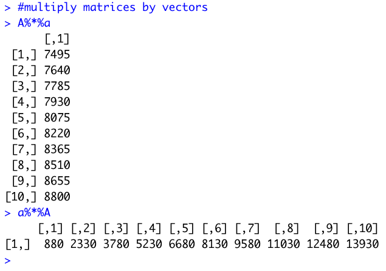
Matrix B and vector b could only be multiplied without error when matrix B was placed before vector b. This is because matrix B has the same number of columns, 100, as vector b has values, also 100.
When vector b comes before matrix B in the calculation (b %*% B), R returns an error because the values of vector b don't equal the number of rows in matrix B, which is 10.
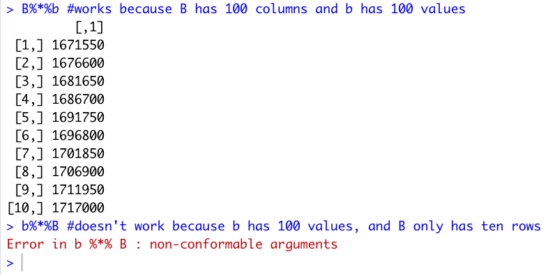
The final task was finding the inverse of a square matrix with two columns, two rows, and values 2 through 5. The matrix was generated using the matrix() function
in R, the determinant was found with the det() function, and the inverse was found with the solve() function.
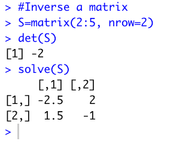
Before this assignment I was very unfamiliar with matrices, so this was a good help in learning the basics of their use and general terminology. I ended up reading about matrix multiplication
online to understand what exactly the computer is doing when using the %*% argument, as I was not previously exposed to matrices in any math classes prior to this course.
The next step was to create two vectors. I purposefully made sure that each vector, a and b, had either 10 or 100 values
so that they would better align with matrices A and B for multiplication using the %*% argument.
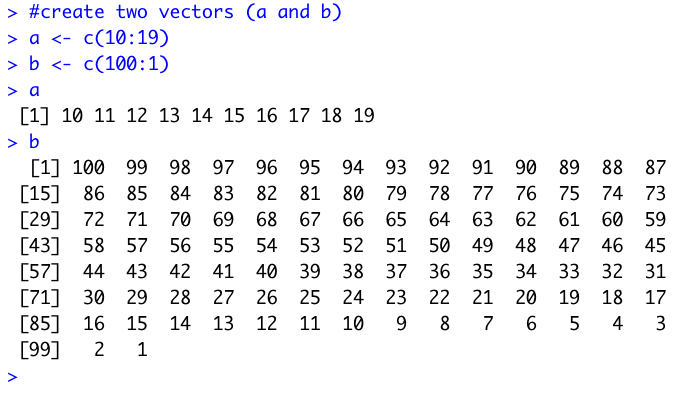
Next we had to test matrix multiplication using the %*% argument with matrices A and B, and vectors a and b.
Matrix A and vector a were able to be multiplied in any order, since the length of vector a is 10 and matrix A has both 10
columns and 10 rows.
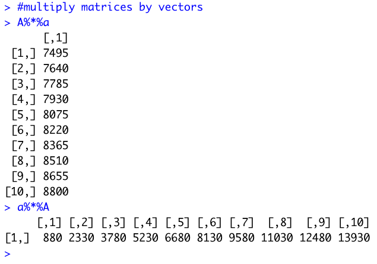
Matrix B and vector b could only be multiplied without error when matrix B was placed before vector b. This is because matrix B has the same number of columns, 100, as vector b has values, also 100.
When vector b comes before matrix B in the calculation (b %*% B), R returns an error because the values of vector b don't equal the number of rows in matrix B, which is 10.
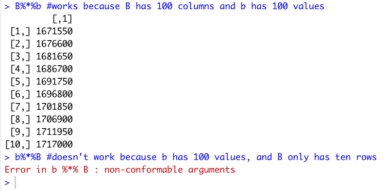
The final task was finding the inverse of a square matrix with two columns, two rows, and values 2 through 5. The matrix was generated using the matrix() function
in R, the determinant was found with the det() function, and the inverse was found with the solve() function.
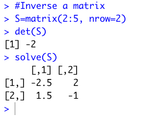
Before this assignment I was very unfamiliar with matrices, so this was a good help in learning the basics of their use and general terminology. I ended up reading about matrix multiplication
online to understand what exactly the computer is doing when using the %*% argument, as I was not previously exposed to matrices in any math classes prior to this course.
Looking forward to progressing towards building an R package!
As always the compiled R file can be found below, and all of the files can be found on my Github page.